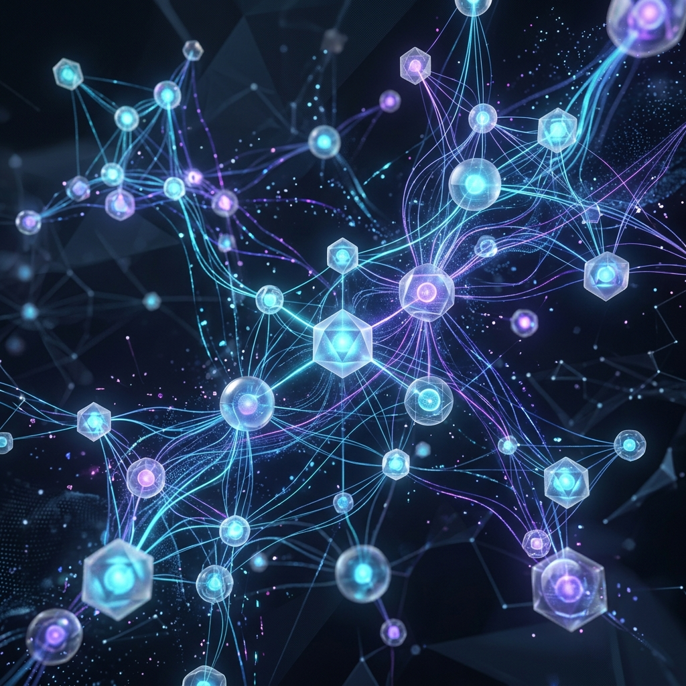

Auditoría de Automatización
Mapeamos tus procesos, identificamos cuellos de botella y diseñamos un roadmap de automatización con ROI estimado para cada flujo.

Diseñamos, construimos y operamos sistemas de inteligencia artificial que ejecutan tareas complejas sin intervención humana — desde atención al cliente hasta investigación de mercado.
No vendemos humo. Implementamos agentes que resuelven problemas reales y generan ROI medible.
Mapeamos tus procesos, identificamos cuellos de botella y diseñamos un roadmap de automatización con ROI estimado para cada flujo.
Diseñamos ecosistemas donde agentes especializados colaboran para resolver problemas complejos que cruzan departamentos.
Construimos agentes autónomos de producción: desde chatbots inteligentes hasta sistemas de research y procesamiento de documentos.
Implementamos controles human-in-the-loop, auditoría de decisiones y compliance para que tus agentes actúen de forma segura.
Mantenimiento continuo: monitoreamos rendimiento, optimizamos costos de tokens y actualizamos modelos para máxima eficiencia.
Workshops prácticos para que tu equipo pase de "hacer el trabajo" a "supervisar a los agentes que hacen el trabajo".
No dependemos de una sola plataforma. Orquestamos el stack agéntico más avanzado disponible.
Razonamiento de nivel experto para análisis, redacción y toma de decisiones complejas.
Agente autónomo que navega la web, gestiona tu calendario, envía emails y ejecuta tareas desde WhatsApp.
Agente de codificación que entiende tu codebase completo y ejecuta cambios multi-archivo de forma autónoma.
OpenCode como agente de código open-source + Hermes como orquestador multi-agente con memoria persistente.
El backbone de orquestación: conecta 400+ apps con nodos de IA personalizados y lógica condicional avanzada.
Para cuando necesitas un motor web robusto, dashboards personalizados o APIs propietarias.
Un agente que investiga prospectos, enriquece datos desde LinkedIn y CRM, genera scores de calificación y redacta mensajes personalizados — todo mientras duermes.
Ver caso completo →No es un chatbot con respuestas predefinidas. Es un agente que accede a tu CRM, verifica pedidos, procesa devoluciones y escala solo los casos realmente complejos.
Ver caso completo →Facturas, contratos, reportes: un agente extrae datos, los clasifica, valida contra tu ERP y genera alertas ante discrepancias — en segundos, no en horas.
Ver caso completo →Sin formularios largos. Solo una llamada de 30 minutos donde entendemos tu negocio y te decimos exactamente cómo podemos ayudarte.
💬 Chatear por WhatsAppRespuesta en menos de 24 horas · Sin compromiso